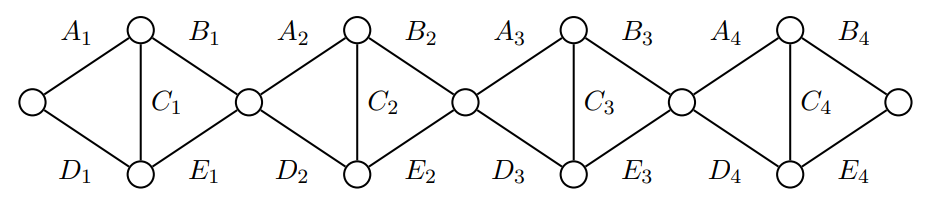

2024-2025 CTU Open Contest
- 連結：https://codeforces.com/gym/105442
- 時間：2024 Nov 1, 14:44-19:45
- 團隊：NYCU_MyGO!!! (SorahISA, ub33, nella17)
- 成績：9 / 12, Penalty 803, dirt 30% ( A B C D E F G H I J K L )
A. Flag Bearer
Tags: implementation
水題，跳過
B. Cowpproximation
Tags: geometry, binary search
給 個圓 ，求最小的 使得 非空。
- 、、、誤差 以內。
經典題，對 二分搜之後檢查每個圓的圓周上是否存在一點在所有圓內。
兩圓交點弄出了一堆 bug，現在還沒 AC。
待補
C. Reptile Eggs
待補
D. Fishception
Tags: N/A
一開始平面上有 個點形成了一個矩形（邊不用平行座標軸），接著有 次操作，每次會加入 個點，這四個點會形成一個新的矩形，且新矩形嚴格包含了其他矩形們。
給 個平面上的點，代表所有操作後的點，求原本的矩形的面積。
- 、
每次拔掉凸包上的點， 次之後就會剩下原本的四個點。
- Case 1: 最外面的矩形不平行座標軸
- 那 、 座標最大、最小的點各不相同且必定在凸包上。
- Case 2: 最外面的矩形平行座標軸
- 那 、 座標最大、最小的點各有兩個，但容易看出這些點的集合只有四個點且必定在凸包上。
用兩個陣列維護按照 、 座標排序的 ID，剩下的用 while 迴圈就很好做。
E. Pigpartite Giraffe
待補
F. Hamster
Tags: N/A
水題，跳過
G. Pray Mink
Tags: dp
待補
範圍夠小，對效率沒有特別要求時用遞迴解會比較好做。
H. Ornithology
Tags: N/A
水題，跳過
求逆序數對可以用以下 code 搭配 BIT 來計算
int ans = 0;
for (int x : arr | views::reverse) {
ans += bit.ask(x-1), bit.add(x, 1);
}
I. P||k Cutting
Tags: binary search, sparse table
給定非負整數 以及非負整數 ，求有多少個 subarray 滿足
- 、、
OR 只會越變越大，可以以每個位置當左界做二分搜。
先用 sparse table 預處理區間 OR 就能做到 。
J. Rabid Rabbit
Tags: sweep line
給定正整數 以及 次詢問 ，求
其中 ， 是費氏數列。
- 、、
嘗試對每個 回答所有詢問。
令 滿足 ，如果把 打到二維平面上，那麼一個詢問 相當於是詢問存不存在 滿足 且 。
所有有意義的 可以用 map 對每個 找前面最後一個 的出現位置來求出。
把詢問跟 pair 依照左界（ 座標）由大到小排序，只需要維護前綴 pair 的最小 座標即可 求解。
整體複雜度是 。
K. Fellow Sheep
Tags: N/A
有一個長度 的以下這種圖，給定 ，求左端點到右端點的最大流。

- 、 值域
有四種不同路徑
對每塊取這四個 的 加起來就是答案。
L. Watchdogs
Tags: lca, minimum vertex cover
給一棵 個點的樹，有 隻老鼠在樹上，每隻老鼠只能在 路徑的重心（可能有一個或兩個）被抓到。
求最少需要在多少個點放置捕鼠器才能抓到所有老鼠。
- 、
求路徑中點就是經典 LCA 題。
每隻老鼠能被抓到的位置要嘛是一個點（可以看成自環），要嘛是樹上的一條邊連接著的兩個點。所以問題就變成要在樹上的某個子圖做點覆蓋。
可以樹 DP 就好，也可以直接砸 Dinic。以下是最大流的做法：
- 因為樹是二分圖（考慮深度奇偶性），所以可以建如下的圖：
- 源點連到深度為奇數的點
- 深度為偶數的點連到匯點
- 對老鼠能被抓到的邊，將深度為奇數的點連到深度為偶數的點
- 對老鼠能被抓到的點，因為他一定要被選到，於是就新增一個虛點，並看奇偶決定怎麼連邊
- 每條邊的流量皆為